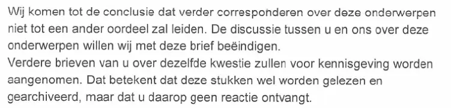

Prueba · Carta
Defensor del Pueblo de los Países Bajos a Giltay, con la carta de Giltay del 13 de marzo de 2018, 10 de abril de 2018
El pasaje
«Llegamos a la conclusión de que seguir manteniendo correspondencia sobre estos temas no conducirá a una valoración distinta. Con esta carta deseamos poner fin a la discusión entre usted y nosotros sobre estos temas. Las cartas que nos envíe en adelante sobre la misma cuestión se archivarán sin más trámite. Esto significa que esos escritos se leerán y se archivarán, pero que usted no recibirá respuesta a ellos». Página 17, el párrafo central de la carta. Traducido del neerlandés; el texto original figura a continuación.
Texto original
“Wij komen tot de conclusie dat verder corresponderen over deze onderwerpen niet tot een ander oordeel zal leiden. De discussie tussen u en ons over deze onderwerpen willen wij met deze brief beëindigen. Verdere brieven van u over dezelfde kwestie zullen voor kennisgeving worden aangenomen. Dat betekent dat deze stukken wel worden gelezen en gearchiveerd, maar dat u daarop geen reactie ontvangt.” «Voor kennisgeving aangenomen» (se toma nota) es la fórmula administrativa con la que un escrito se registra como recibido y se archiva sin respuesta.

Por qué importa este documento
En la página 17 del PDF, el Defensor del Pueblo de los Países Bajos (Nationale ombudsman) escribió a Giltay el 10 de abril de 2018 que no veía en la carta de este del 13 de marzo de 2018 motivo para volver sobre su «postura adoptada anteriormente». El Defensor del Pueblo no entró en ninguno de los agravios, dio por terminada la discusión y anunció que las cartas posteriores sobre la misma cuestión se leerían y archivarían, pero no se responderían. Para las nuevas quejas sobre el Ministerio de Defensa, la respuesta remitía a Giltay en primer lugar a la ministra de Defensa, porque el Defensor del Pueblo no tramita ninguna queja antes de que el órgano afectado haya tenido ocasión de responder.
El mismo PDF se abre con la carta del 13 de marzo de 2018, en la que Giltay expone nueve agravios, adjunta diecinueve anexos y pide al Defensor del Pueblo que corrija el error, retire el informe controvertido y explique públicamente ese paso. El ensayo sostiene que la calificación ministerial de Giltay sigue publicada en línea hasta el día de hoy, en el informe público del Defensor del Pueblo de 1999, y que en 2018, tras la rehabilitación judicial, la institución se negó a entrar en el fondo de los agravios de Giltay.
Procedencia
- Documento
- Carta, página 17 de un PDF que en las páginas 1–16 contiene también la carta de Giltay del 13 de marzo de 2018 al Defensor del Pueblo de los Países Bajos
- Remitente
- El Defensor del Pueblo de los Países Bajos, La Haya, con la firma de Reinier van Zutphen, Defensor del Pueblo
- Destinatario
- E.F. Giltay, La Haya
- Fecha
- 10 de abril de 2018, según el sello de fecha en el margen
- Referencia
- H201700015
- Asunto
- «Reactie op uw brief» (respuesta a su carta)
- Referencias
- La carta de Giltay del 13 de marzo de 2018; las cartas anteriores que el Defensor del Pueblo le dirigió el 28 de octubre de 2015 y el 7 de marzo de 2017; la Klachtenregeling Defensie (reglamento de quejas de Defensa)
- También en este archivo
- Carta de Giltay al Defensor del Pueblo de los Países Bajos, 13 de marzo de 2018, sobre nueve agravios contra el Defensor del Pueblo y dos nuevas quejas sobre el Ministerio de Defensa, con una lista de diecinueve anexos
- Idioma
- Neerlandés
- Páginas
- 1 página, es decir, la página 17 del PDF de 17 páginas
- Tachado
- En la respuesta están tachados el número de teléfono directo, el nombre del funcionario encargado del expediente y la firma
- Conservado por
- Archivo del autor
- Véase también
- Informe 1999/507 del Defensor del Pueblo de los Países Bajos, 17 de diciembre de 1999
Citado en:
- el ensayo «La prohibición cayó, el libro quedó en pie» en el capítulo (9) «Registrado para siempre»
- la sección de voces bajo el epígrafe «Psiquiatrización indebida».
Documento: https://
Modificado por última vez el 19 de septiembre de 2026, consultado el 27 de noviembre de 2026.

Esta página es una ficha de prueba del libro El general del encubrimiento de Edwin Giltay y del sitio web que lo acompaña.